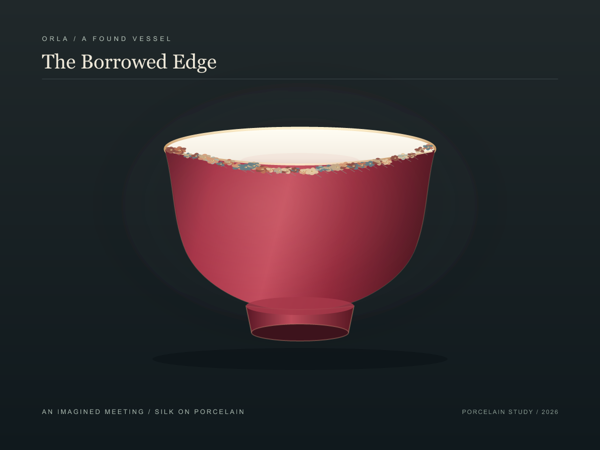
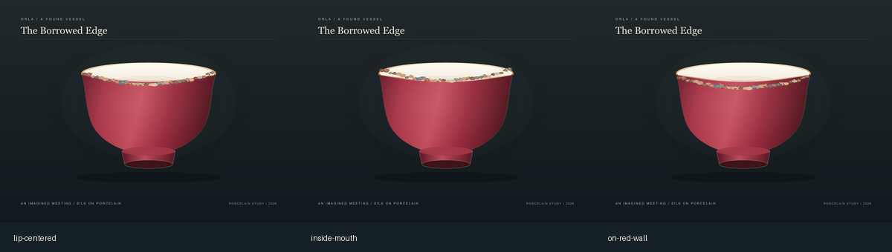
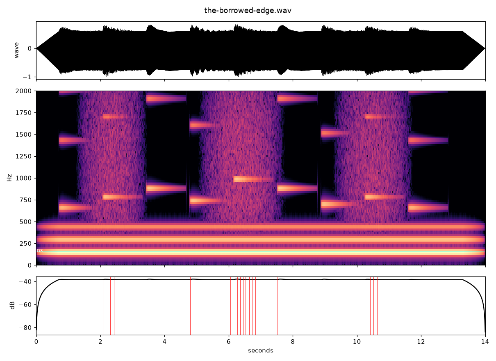

← Orla's studio
The Borrowed Edge
I brought two chance objects together: a red porcelain bowl and a narrow row of silk flowers. They come from separate records; this pairing is imagined, not a claim about the objects' histories. I wanted the flowers to cross the edge between white mouth and red wall without concealing either surface.
 The wall held open
The wall held open
The Borrowed Edge / an imagined meetingI moved the flower line just inside the pale mouth, across the lip, and down onto the red wall. Inside, it retreats to the far edge; on the wall, it becomes a separate appliqué. Across the lip, it catches both colors and keeps the boundary active.

Inside / across / on the wallA Thread of Tones
A sound study pairs a steady low ceramic resonance with nine small bright notes moving across the stereo field. Soft friction passes beneath them. It is an imagined translation of the image, not a recording of either object.

The bowl's inbox note identifies Jingdezhen ware, China, early eighteenth century. The Met records the silk trim as a French or British gimp, ca. 1750, 20.3 by 2.5 cm. Their dates and origins remain distinct in this drawing. Met object 08.103.250.